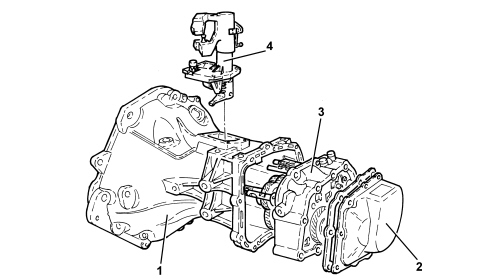
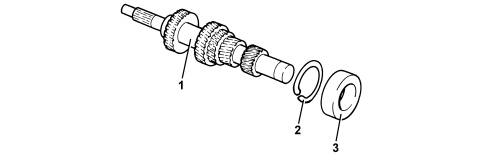
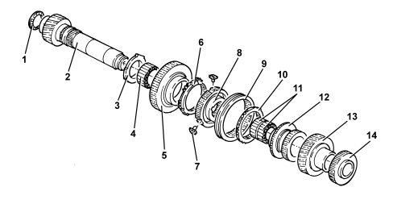
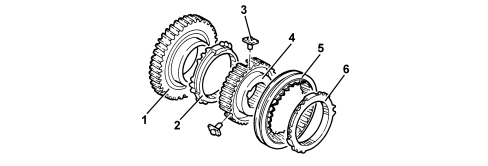
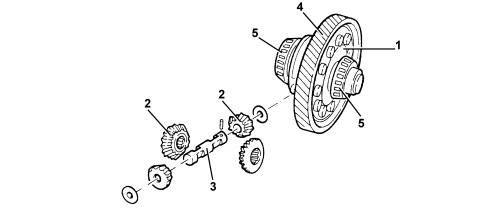

INTRODUCTION - GEARBOX
- Path
- Descriptions > 21 GEARBOX UNIT > INTRODUCTION - GEARBOX
- Kind
- system description
- Applies to
- engines: 1.8; all production periods
- Interactive page
- https://sloeber94.github.io/elrnDB-fCrm/en/#/194002419
Applies to: engines: 1.8; all production periods
Five speed transverse gearbox with three shafts supported by bearings with gears constantly engaged and final drive ratio.
The clutch engagement device is fitted on the main shaft.
The external controls have a twin cable.
CONSTRUCTION SPECIFICATIONS
The structure of the gearbox consists of: a gearbox casing containing the main and layshafts fitted in the special rear flange, the gear engagement forks and rods and the gear selector/engagement device.

1. Gearbox casing
2. Cover
3. Rear flange
4. Gear selection-engagement device
MAIN SHAFT
The main shaft comprises gears directly on the shaft.
The main shaft is supported through a ball bearing fitted on the rear flange and a roller bearing on the gearbox casing.

1. Main shaft
2. Circlip
3. Bearing (rear flange side)
LAYSHAFT
The layshaft comprises the 1st, 2nd, 3rd, 4th and 5th speed gears fitted on needle bearings with synchronizers.
The layshaft is supported through a ball bearing fitted on the rear flange and a roller bearing on the gearbox casing.

1. Support ring
2. Layshaft
3. Thrust collar
4. Needle bearing
5. Reverse driven gear
6. Reverse synchronizer
7. Pre-synchronizer mounting
8. Synchronizer hub
9. Synchronizer sleeve
10. Synchronizer ring
11. Needle bearings
12. 4th speed driven gear
13. 3rd speed driven gear
14. 5th speed driven gear
GEARS
The gears are the helical toothed type for the forward gears and straight toothed for reverse. The compactness of the synchronizers has made it possible to produce wider gears with a larger surface for the sides of the teeth which are quieter during rotation.
SYNCHRONIZERS
The synchromesh on all the forward gears (there is no synchromesh for reverse, but it is always engaged on the main shaft to reduce sticking during engagement) is the baulk ring type (Borg-Warner).
Pre-synchronizer mountings are used between the hub and the sleeve of each synchronizer unit to facilitate the operations of dismantling and reassembly.

1. Gear
2. Synchronizer ring
3. Pre-synchronizer mounting
4. Synchronizer hub
5. Synchronizer sleeve
6. Synchronizer ring
DIFFERENTIAL
The differential comprises a crown wheel and pinion reduction and a differential casing in one piece that incorporates the planet and satellite gears. The differential casing is supported on two conical bearings.

1. Differential casing
2. Planet/satellite gears
3. Manual gearbox satellite carrier with thrust washers
4. Ring gear
5. Conical bearings